Is this a good place to fight?
2026-08-09 · the world arena's staging search, measured for the first time on the one thing it never asked ·
instruments tools/battle_place.mjs, tools/battle_place_sheets.py, tools/battle_place_stats.py
stageArena stages 100% of sampled ow-valley cells and the camera language owns size, occlusion and
tonal separation. The places it picks are another matter: it staged on a bare rock dome, in a building's shadow,
inside a hedge bank, on a rooftop, and once with the lens inside a leaf. All of those are legal placements.
The search only ever asked can bodies stand here and can the camera see them.
Method — the sort came first, on purpose
62 sites were staged as real battles through the shipped path and photographed with the stage's own
snapshot(), so every frame below is the player's pipeline (RenderPass → GTAO → bloom → OutputPass) and the
bytes are display-space. They were then sorted by eye into good / acceptable / bad from contact sheets alone, before a
single number was read (sort.json; sheets in sheets/). Only then was every recorded axis asked how
well it separates the piles. A metric invented before the sort is taste with a number on it.
The 62 sites are close to a census, not a sample: walking all 400 recorded road cells into the neighbouring encounter zones and refusing any site within 5 m of an accepted one exhausts at 62. That is the size of the band a fight can actually fire in beside the ow-valley road.
The distribution, before
48.4% bad · 37.1% acceptable · 14.5% good
That is the answer to "how far is the world arena from default-ready". Half the places it picks are places where a body is lost — inside foliage, at its background's own value, or in near-black.
Which axes separate the piles — and which do not
AUC is the probability a random good site outranks a random bad one; 0.5 is chance and below 0.5 means the
axis runs backwards, which is a result. sep = |AUC−0.5|×2. Full table in axes.json.
| axis | AUC | sep | bal.acc | good | accept | bad | direction |
|---|---|---|---|---|---|---|---|
| frameL.L95 | 0.937 | 0.874 | 0.917 | 189.711 | 159.596 | 125.533 | good is HIGHER |
| sil.ringL | 0.930 | 0.859 | 0.900 | 113.500 | 81.713 | 51.810 | good is HIGHER |
| sil.castL | 0.922 | 0.844 | 0.950 | 124.578 | 85.896 | 72.693 | good is HIGHER |
| surf.entropy | 0.922 | 0.844 | 0.894 | 3.976 | 3.769 | 2.843 | good is HIGHER |
| surf.topSurface | 0.078 | 0.844 | 0.894 | 0.199 | 0.236 | 0.444 | good is LOWER |
| sil.castFrac | 0.907 | 0.815 | 0.933 | 0.080 | 0.065 | 0.052 | good is HIGHER |
| sil.castPx | 0.907 | 0.815 | 0.933 | 4602.222 | 3737.435 | 2998.167 | good is HIGHER |
| surf.backEntropy | 0.907 | 0.815 | 0.933 | 3.657 | 3.409 | 2.442 | good is HIGHER |
| frameL.L50 | 0.885 | 0.770 | 0.861 | 109.256 | 77.735 | 47.117 | good is HIGHER |
| surf.backTopSurface | 0.126 | 0.748 | 0.867 | 0.237 | 0.294 | 0.507 | good is LOWER |
| sil.bandMin | 0.133 | 0.733 | 0.883 | 3.880 | 7.375 | 12.291 | good is LOWER |
| sun.shaded | 0.157 | 0.685 | 0.861 | 1.556 | 2.696 | 3.433 | good is LOWER |
| sun.shadedFrac | 0.157 | 0.685 | 0.861 | 0.389 | 0.674 | 0.858 | good is LOWER |
| ground.span | 0.161 | 0.678 | 0.782 | 0.974 | 1.317 | 1.422 | good is LOWER |
| surf.backBins | 0.833 | 0.667 | 0.828 | 39.111 | 34.870 | 26.267 | good is HIGHER |
| sil.clutter | 0.830 | 0.659 | 0.839 | 48.224 | 41.498 | 29.407 | good is HIGHER |
| rays.dSpanOct | 0.811 | 0.622 | 0.789 | 2.564 | 1.820 | 1.705 | good is HIGHER |
| surf.bins | 0.802 | 0.604 | 0.772 | 53.333 | 51.696 | 42.533 | good is HIGHER |
| site.at.z | 0.796 | 0.593 | 0.778 | 36.388 | 19.175 | -4.395 | good is HIGHER |
| at.z | 0.794 | 0.589 | 0.778 | 35.995 | 18.714 | -5.174 | good is HIGHER |
| site.player.z | 0.794 | 0.589 | 0.778 | 35.995 | 18.714 | -5.174 | good is HIGHER |
| site.at.x | 0.211 | 0.578 | 0.761 | -38.517 | -22.346 | 2.952 | good is LOWER |
| view.score | 0.789 | 0.578 | 0.811 | 7.765 | 7.443 | 7.350 | good is HIGHER |
| relief | 0.215 | 0.570 | 0.806 | 0.554 | 0.821 | 1.189 | good is LOWER |
| frameL.L05 | 0.781 | 0.563 | 0.806 | 36.644 | 27.252 | 23.370 | good is HIGHER |
| site.at.y | 0.767 | 0.533 | 0.789 | 26.218 | 19.526 | 18.302 | good is HIGHER |
| rays.dFar | 0.759 | 0.519 | 0.744 | 37.801 | 21.559 | 23.603 | good is HIGHER |
| sil.edgeRGB | 0.244 | 0.511 | 0.739 | 8.892 | 8.765 | 17.298 | good is LOWER |
| ground.rough | 0.245 | 0.510 | 0.807 | 0.184 | 0.223 | 0.267 | good is LOWER |
| at.x | 0.248 | 0.504 | 0.761 | -37.013 | -23.025 | 2.381 | good is LOWER |
| site.player.x | 0.248 | 0.504 | 0.761 | -37.013 | -23.025 | 2.381 | good is LOWER |
| rays.layers | 0.746 | 0.493 | 0.711 | 7.333 | 5.652 | 5.800 | good is HIGHER |
| rays.dMed | 0.743 | 0.485 | 0.700 | 11.691 | 10.923 | 10.152 | good is HIGHER |
| at.y | 0.741 | 0.481 | 0.772 | 26.155 | 19.735 | 18.502 | good is HIGHER |
What won
Whether the frame is one flat lit thing or many. surf.topSurface — the share of the background frame owned by
the single most common quantised colour — separates at AUC 0.922 (good 0.199, bad 0.444), and its entropy twin agrees.
And whether the cast stands in the sun. sun.shadedFrac reads 0.39 at good sites and 0.86 at bad ones
(AUC 0.157 inverted = 0.843), and it costs four rays where the surface term costs a render.
What did not — the negative results, which cost more to learn
- Sky / horizon presence is not the axis.
rays.skyFracreads AUC 0.681 andrays.horizonRow0.556. Almost no frame in this valley contains sky at all; the camera pitch band and the valley walls see to that. - The axis the solver already optimises barely separates.
view.back— clear depth behind each body, the whole argument the base pose is searched on — reads AUC 0.733, andview.seenreads 0.657 because it is ~0.99 everywhere by construction. The staging solver is already maximising something that is not the thing that matters. - Relocation distance predicts nothing.
site.R/site.d: AUC 0.450. Where the ladder puts the fight relative to the player has no bearing on whether it reads — which independently supports the 2026-08-08 ruling that distance is not the constraint. - Ground slope is weak (AUC 0.318 → sep 0.364); roughness and vertical span are moderate (sep 0.510 / 0.678). Terrain flatness is a minor term, not the story.
- And the shipped tonal metric runs backwards across sites.
sil.edgeRGB— what theTONEboom chooser maximises — ranks the three piles at 0.291 ordered-pair concordance: good sites average 8.9 against bad sites' 17.3. A lit body against near-black is enormous RGB contrast and is exactly the pile a human calls bad. TONE is not wrong at its own job — choosing a boom at one site — but it must never be used as a placement metric. - Combining does not help. Sun exposure and surface dominance correlate 0.59; the z-sum of the two scores AUC 0.881, worse than surface dominance alone at 0.922.
The change
The ladder returned on its first acceptance, and ring 0 accepts at most cells — so there was never a second candidate
to prefer and any quality term would have been inert. It now finishes the ring that first accepted, walks one more, and
prefers a materially sunnier site among them. Sun exposure is the term, not surface dominance: the render-based
winner has no affordable proxy (its ray-grid stand-in scores only AUC 0.79 and costs 52 ms a candidate — measured,
proxy-8x5.json), and sun exposure separates nearly as well for four rays.
It is a refusal, not a preference — the same shape TONE's margin has. A challenger must move at least half the cast
out of shadow (PLACE.sunMargin = 0.5) before it takes the site; the incumbent is still the ladder's own first
acceptance and is never assumed to be the worst. ?bplace=0 is the A/B on one build.
Two short-circuits, proven rather than argued. lit is a fraction, so if the incumbent is already
within the margin of fully lit no candidate can clear the bar (22/62 cells); and candidates are generated in
ring-then-bearing order with the tie-break sunniest→nearest→earliest, so the first fully-lit challenger that clears the
margin is exactly what the ranking would pick (19/62). tools/battle_place.mjs --mode=equiv drives both arms in ONE page
with ORBIT.yaw pinned — 62/62 identical sites, 0 differ — and the fast path cuts the walk from
72.9 ms to 46.9 ms at p50. The yaw pin matters: solveArena's ladder is relative to the live camera
heading, so two separate runs of the same cell are not comparable and six cells appeared to differ for exactly that reason.
What it cost
| arm | staged | staging solve p50 / p95 / max | trigger → first battle frame p50 / p95 / max | ring histogram | relocation p50/p90/max |
|---|---|---|---|---|---|
?bplace=0 first acceptance | 40/40 | 20.2 / 322.5 / 397.3 ms | 576 / 855 / 855 ms | [[0, 19], [5, 19], [8, 2], [11, 0], [13, 0]] | 5 / 5 / 8 m |
| shipped quality term | 40/40 | 69.7 / 371.2 / 441.3 ms | 734 / 900 / 900 ms | [[0, 13], [5, 23], [8, 4], [11, 0], [13, 0]] | 5 / 8 / 8 m |
Same 40 interleaved cells, same session. Coverage is unchanged at 100%. The fight still moves one sideways step — p90 5 → 8 m, max 8 m, well inside the 13 m ladder. Without the two short-circuits the solve p50 was 179.3 ms.
The distribution, after — and every site, honestly
32.3% bad · 43.5% acceptable · 24.2% good
14 sites improved, 0 regressed. 13 of the 14 are sites the term actually moved; the fourteenth (s048) was
not moved — its site is byte-identical and the frame changed because the TONE probe picked pitch 0.16 instead of 0.34
between runs. That is capture variance, not this change, and excluding it gives the conservative
bad 48.4% → 33.9%, good 14.5% → 24.2%. Restricted to the 21 sites the term moved: 4 good / 8 acceptable / 9 bad
became 10 good / 11 acceptable / 0 bad.
The nearest thing to a regression is s010: it moved 5 m and the party now stands in a shadowed rock
notch. It stays acceptable either way — a within-pile wash, arguably a small loss. Four of the nine sites already
sorted good were moved (s005 s033 s046 s057) and all four stayed good; s033 and s039 gained sky and
distant hills.
Left: first acceptance. Right: quality term. Blue bar = the term moved this site.
before — ?bplace=0 | after — shipped | ||
|---|---|---|---|
| s000 water |
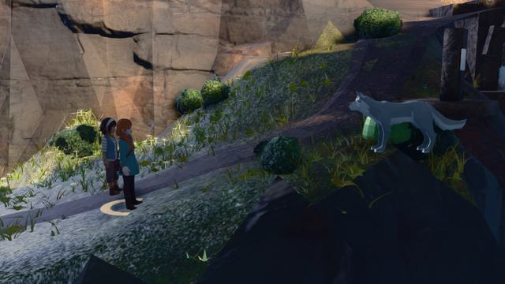 bad party small and dark on a shadowed rock slope; foes against dark rock |
 bad (site unchanged) |
lit 0.00, 1 cands |
| s001 forest |
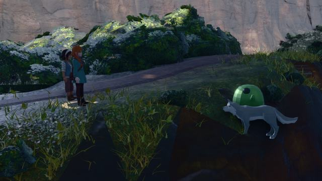 bad whole cast small against a dark hedge bank in shadow |
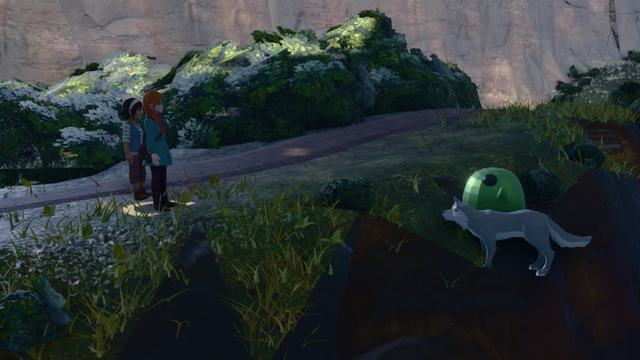 bad (site unchanged) |
lit 0.00, 6 cands |
| s002 forest |
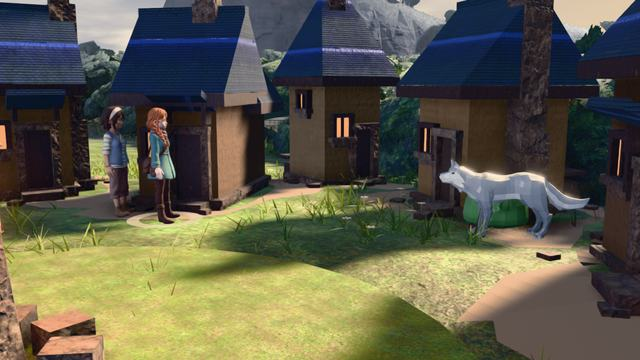 acceptable sunlit village square, but the party is wedged in a doorway between two houses |
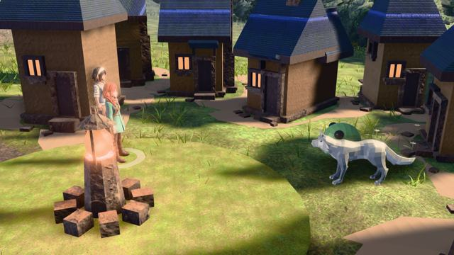 good moved 5 m onto the sunlit waystone lawn; was wedged in a doorway |
UP moved 8 m, lit 0.25→0.75 |
| s003 water |
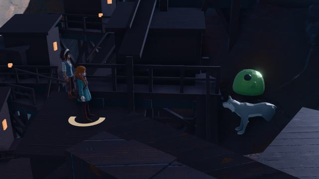 bad under a structure, near-black; the foes are silhouettes with no value |
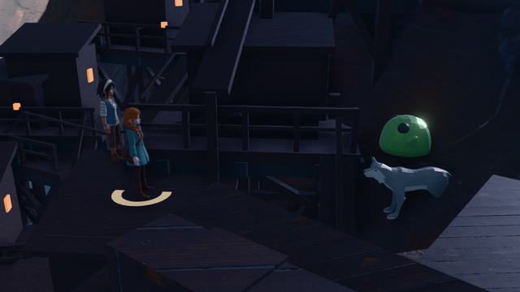 bad (site unchanged) |
lit 0.00, 2 cands |
| s004 crag |
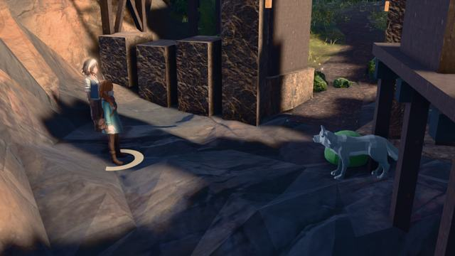 bad party against black timber blocks on a shadowed rock ramp |
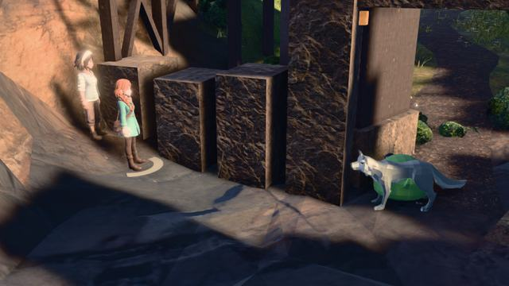 acceptable moved onto a sunlit ramp; the black timber blocks are still behind the party |
UP moved 5 m, lit 0.00→0.50 |
| s005 forest |
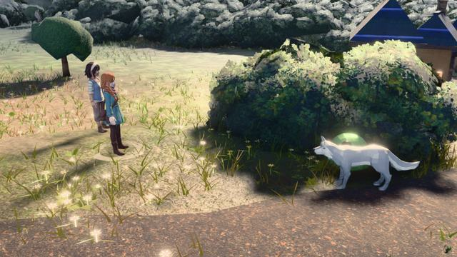 good sunlit clearing, open ground, all four read, trees behind at a different value |
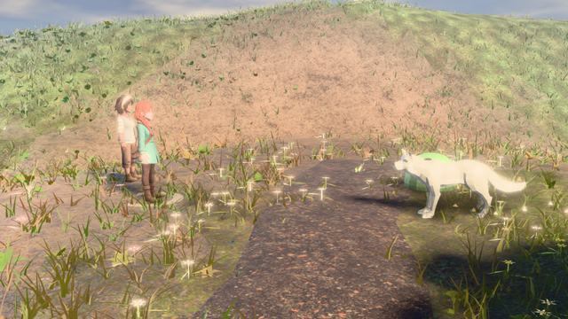 good moved; open lit slope instead of the lit clearing — still good |
moved 5 m, lit 0.50→1.00 |
| s006 crag |
bad dark reed-bed water margin; every body sits at the background's value |
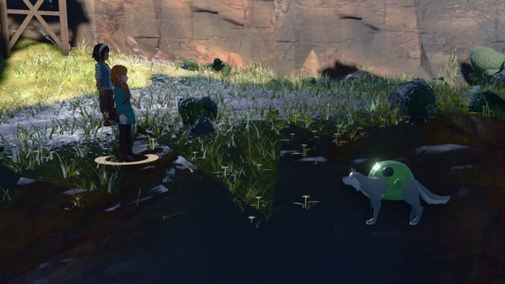 bad (site unchanged) |
lit 0.00, 6 cands |
| s007 meadow |
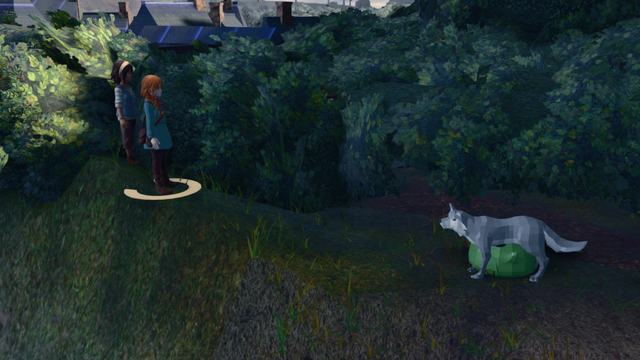 bad party inside a dense dark hedge, foes on dark grass in front of it |
 good moved 5 m out of the hedge onto a lit ledge over the water |
UP moved 5 m, lit 0.00→0.50 |
| s008 crag |
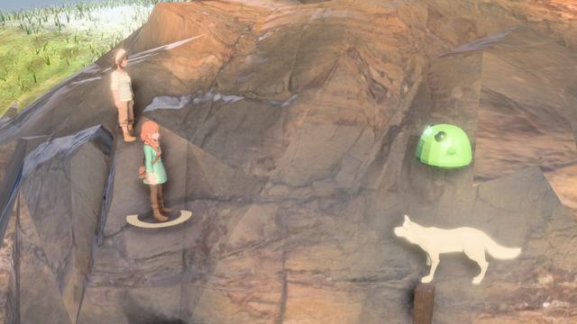 bad bare rock dome owns the frame; the wolf is a white ghost on it |
bad (site unchanged) |
lit 1.00, 5 cands |
| s009 forest |
acceptable party in bush shadow, foes on lit grass; half the cast reads |
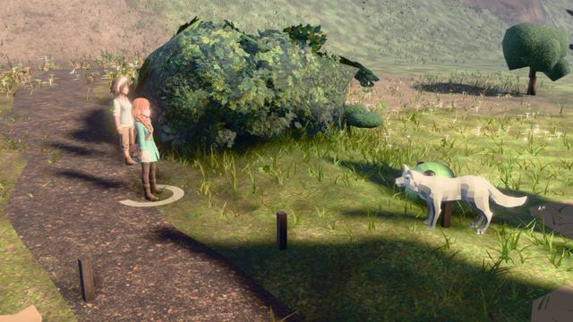 acceptable (site unchanged) |
lit 0.75, 9 cands |
| s010 meadow |
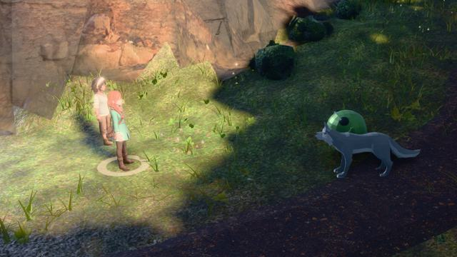 acceptable lit grass under a rock face; reads, but the face fills the left |
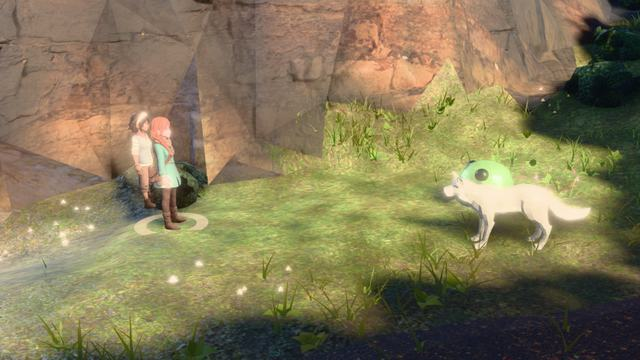 acceptable moved 5 m; the party now stands in a shadowed rock notch — a within-pile WASH, arguably a small loss |
moved 5 m, lit 0.50→1.00 |
| s011 meadow |
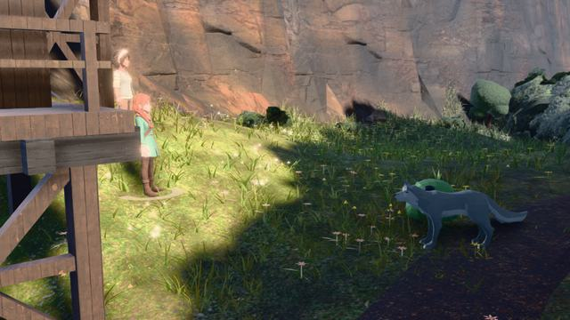 bad party behind timber scaffolding against a shadowed rock wall |
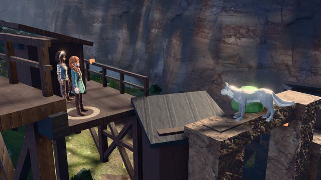 acceptable moved onto a lit timber bridge; was behind scaffolding in shadow |
UP moved 5 m, lit 0.50→1.00 |
| s012 forest |
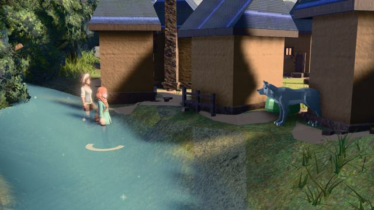 acceptable party standing IN the pond; high contrast but an absurd place |
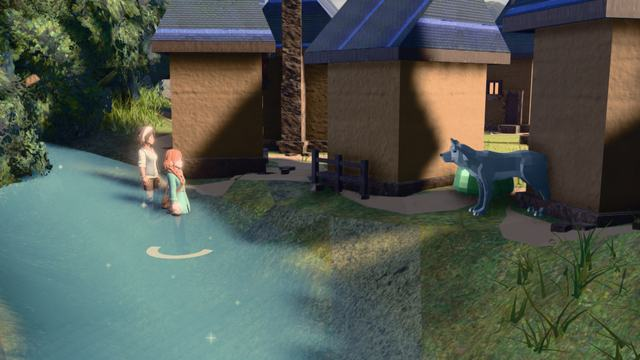 acceptable (site unchanged) |
lit 0.50, 2 cands |
| s013 meadow |
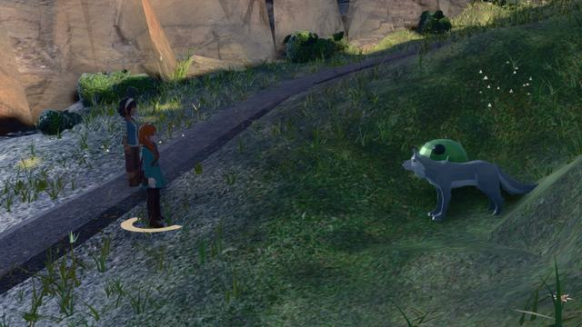 acceptable party dark on a dark path against rock; the foes read on lit grass |
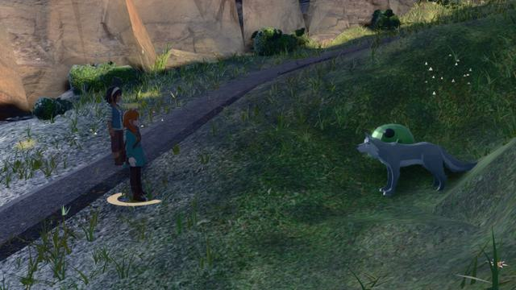 acceptable (site unchanged) |
lit 0.00, 9 cands |
| s014 meadow |
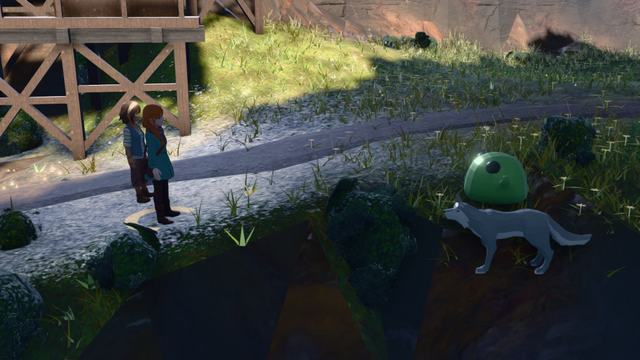 acceptable cast split across a hard light/shadow line at a bridge |
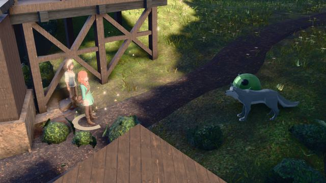 acceptable moved onto the lit patch under the bridge frame |
moved 5 m, lit 0.00→0.50 |
| s015 water |
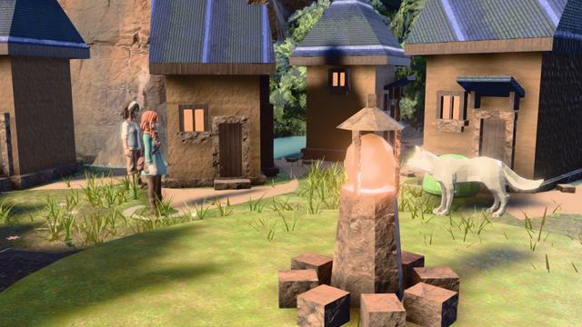 good sunlit village square with a lit waystone; all four read |
good (site unchanged) |
lit 1.00, 1 cands |
| s016 forest |
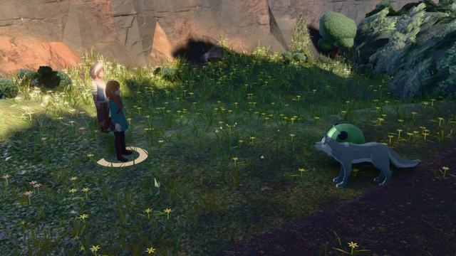 acceptable party against a pink rock face, foes on lit grass |
 acceptable (site unchanged) |
lit 0.25, 9 cands |
| s017 meadow |
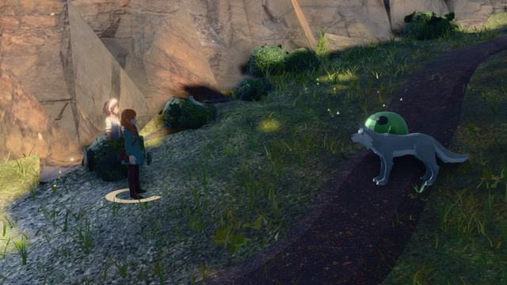 acceptable party half behind a bush, foes on lit grass |
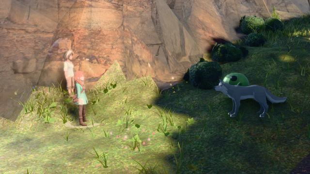 good moved onto lit grass under a lit rock face |
UP moved 5 m, lit 0.00→0.50 |
| s018 crag |
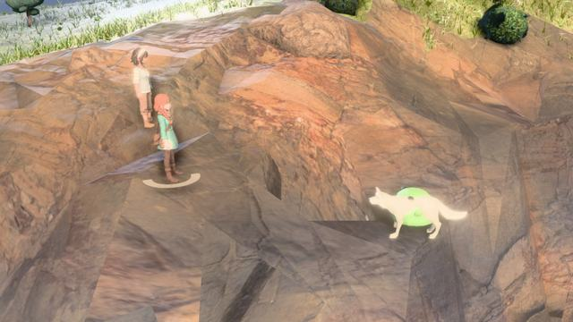 bad bare rock dome, no background at all; the cast is furniture on it |
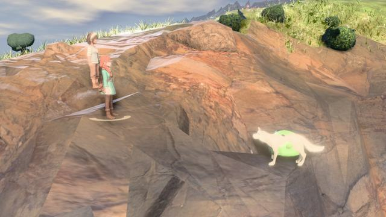 bad (site unchanged) |
lit 1.00, 5 cands |
| s019 meadow |
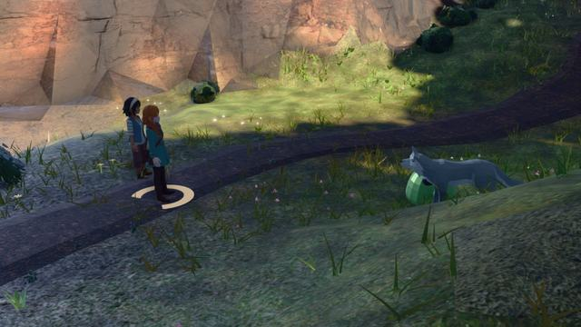 bad the foes are inside the hedge bank at its own value |
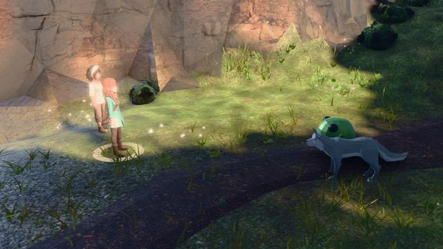 acceptable moved out of the hedge onto lit grass |
UP moved 5 m, lit 0.00→0.50 |
| s020 meadow |
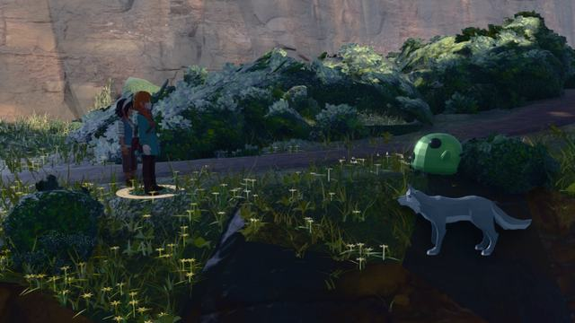 bad party inside a dark hedge bank |
 bad (site unchanged) |
lit 0.00, 6 cands |
| s021 meadow |
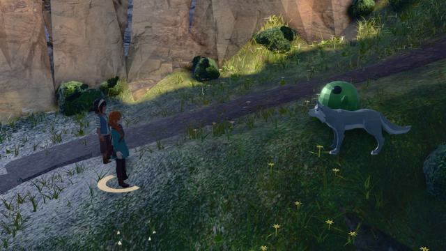 acceptable grass strip under a cliff; reads but the cliff owns the frame |
acceptable (site unchanged) |
lit 0.00, 9 cands |
| s022 forest |
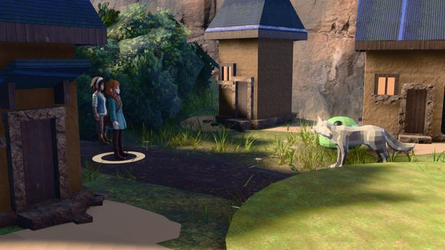 acceptable village, party against a dark shed doorway |
 acceptable (site unchanged) |
lit 0.50, 2 cands |
| s023 forest |
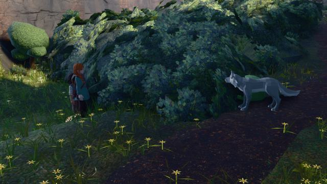 bad a single dark hedge mass owns the frame, cast at its value |
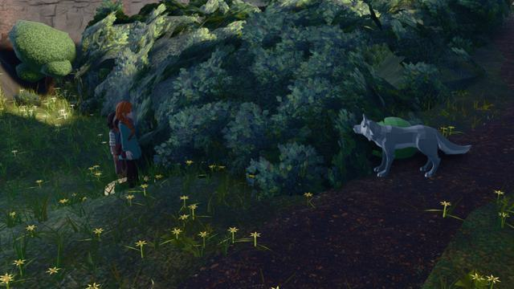 bad (site unchanged) |
lit 0.00, 8 cands |
| s024 forest |
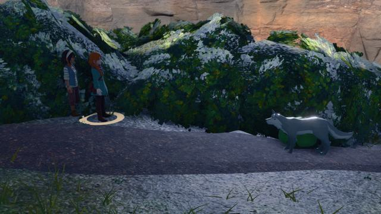 bad dark hedge over dark ground, no separation anywhere |
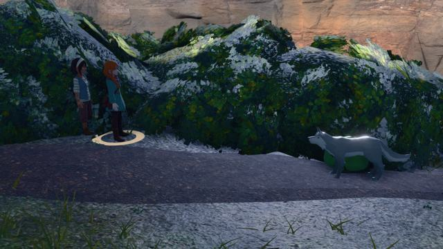 bad (site unchanged) |
lit 0.00, 4 cands |
| s025 forest |
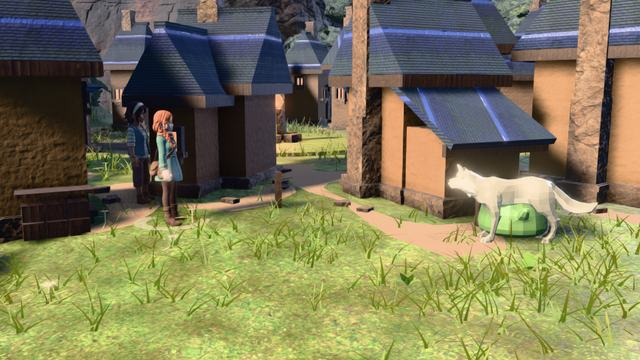 acceptable village, party in a doorway shadow, foes on lit grass |
 acceptable (site unchanged) |
lit 0.75, 6 cands |
| s026 meadow |
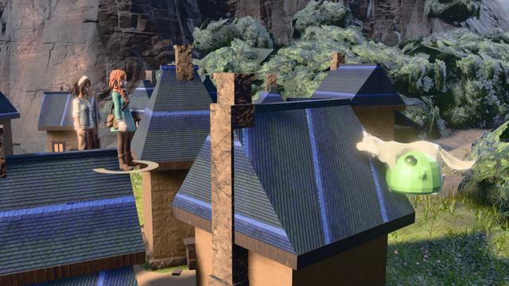 bad the party stands ON the rooftops; roofs own the frame |
bad (site unchanged) |
lit 1.00, 8 cands |
| s027 crag |
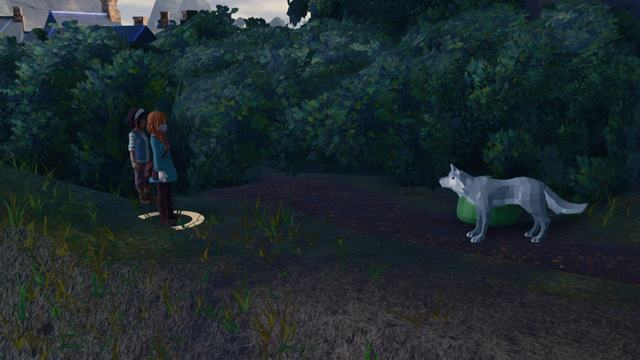 bad dark tree mass over flat brown ground |
 bad (site unchanged) |
lit 0.00, 2 cands |
| s028 meadow |
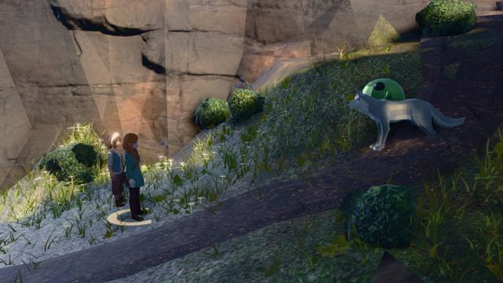 acceptable cast small and spread under a cliff; readable |
 acceptable moved onto a lit rock ledge |
moved 5 m, lit 0.00→0.75 |
| s029 water |
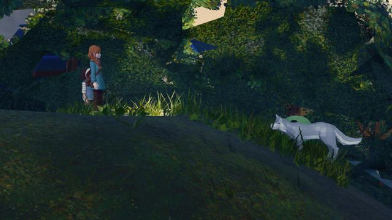 bad dark green slope, cast at the slope's own value |
 acceptable moved out of the dark green slope onto a village path |
UP moved 8 m, lit 0.00→1.00 |
| s030 water |
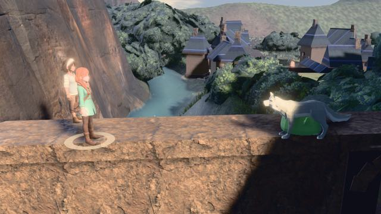 good a stone ledge over the river with the town behind; real depth |
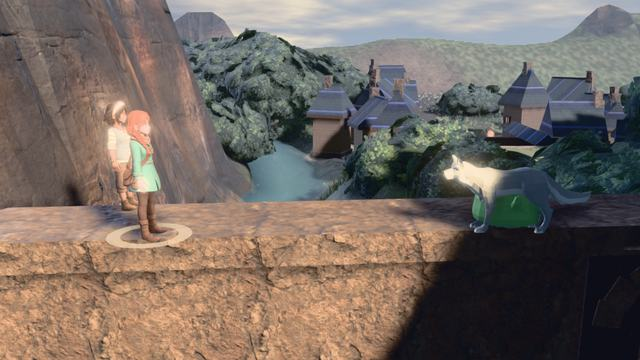 good (site unchanged) |
lit 0.50, 3 cands |
| s031 meadow |
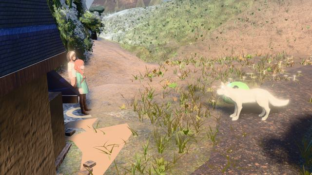 acceptable split light, party against dark timber |
 acceptable (site unchanged) |
lit 1.00, 6 cands |
| s032 water |
bad near-black under a structure |
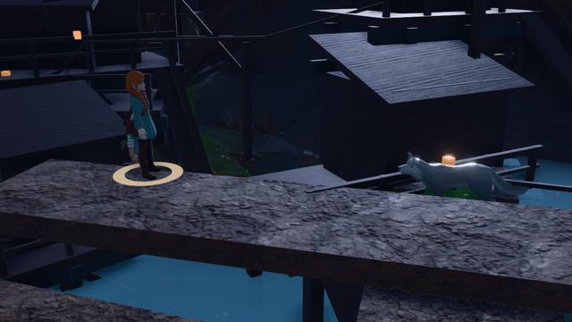 bad (site unchanged) |
lit 0.00, 6 cands |
| s033 crag |
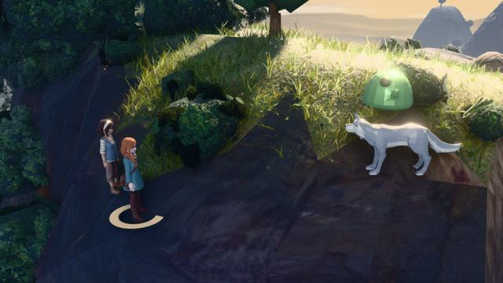 good light figures on dark slate with sky and lit grass above |
good moved onto a lit ridge with sky and distant hills — still good, and better |
moved 5 m, lit 0.00→1.00 |
| s034 meadow |
acceptable plain tan ground fills the frame; the cast reads but there is no background |
 acceptable (site unchanged) |
lit 1.00, 9 cands |
| s035 crag |
bad dark hedge bank at the cast's own value |
bad (site unchanged) |
lit 0.00, 6 cands |
| s036 forest |
acceptable lit rock wall behind the party, foes on gravel |
acceptable (site unchanged) |
lit 0.25, 5 cands |
| s037 meadow |
acceptable party small in shadow, big bushes own the lower frame |
good moved onto lit grass; was small in shadow behind bushes |
UP moved 5 m, lit 0.00→0.50 |
| s038 crag |
bad dark timber structure, cast lost in it |
 acceptable moved onto a lit rock ramp; the wolf is still dim in the cleft |
UP moved 5 m, lit 0.25→0.75 |
| s039 meadow |
bad cast scattered across a washed-out slope, foes up and away |
good moved onto lit grass with sky; was a washed-out slope with the foes up and away |
UP moved 5 m, lit 0.50→1.00 |
| s040 crag |
bad dark scaffolding, party on a platform inside it |
bad (site unchanged) |
lit 0.00, 2 cands |
| s041 meadow |
good open lit slope with sky, all four read |
 good (site unchanged) |
lit 1.00, 9 cands |
| s042 meadow |
acceptable big rock face owns the left, foes on lit grass |
acceptable (site unchanged) |
lit 0.50, 6 cands |
| s043 water |
bad dark trees over dark grass |
bad (site unchanged) |
lit 0.00, 2 cands |
| s044 forest |
bad dark bank, everything at one value |
 acceptable moved beside a lit house; was a dark bank |
UP moved 5 m, lit 0.00→1.00 |
| s045 meadow |
acceptable party in shadow, foes on dark grass; the path gives some read |
acceptable (site unchanged) |
lit 0.00, 7 cands |
| s046 meadow |
good lit rock face and grass, all four read |
 good moved; still a lit rock face and grass — good either way |
moved 5 m, lit 0.50→1.00 |
| s047 meadow |
bad a single dark hedge mass owns the frame |
 acceptable moved onto a lit path; the hedge no longer owns the frame |
UP moved 5 m, lit 0.00→0.50 |
| s048 forest |
bad the camera is inside foliage; a giant green blur owns the frame |
 acceptable NOT MOVED — the site is identical and the change is the TONE probe picking pitch 0.16 instead of 0.34 between runs. Capture variance, NOT this lane's fix, and it is why the attribution below excludes it. |
UP lit 0.00, 6 cands |
| s049 meadow |
good bright open ground, all four read |
 good (site unchanged) |
lit 1.00, 9 cands |
| s050 meadow |
bad dark path under a hedge; a foe is inside the hedge |
bad (site unchanged) |
lit 0.00, 7 cands |
| s051 meadow |
bad party in deep shadow, half the frame black |
 bad (site unchanged) |
lit 0.00, 5 cands |
| s052 meadow |
bad dark grass in shadow throughout |
 bad (site unchanged) |
lit 0.00, 5 cands |
| s053 crag |
acceptable lit gravel and rock, foes on a dark path |
 acceptable moved onto lit stone steps |
moved 5 m, lit 0.25→1.00 |
| s054 forest |
bad deep shadow, dark foliage over dark ground |
bad (site unchanged) |
lit 0.00, 2 cands |
| s055 forest |
acceptable party against a dark hedge, foes on grass |
good moved onto lit flowery grass |
UP moved 5 m, lit 0.00→0.50 |
| s056 crag |
good stone ledge over the river with the town behind |
good (site unchanged) |
lit 0.50, 3 cands |
| s057 meadow |
good lit grass both sides, clean read |
good moved under the timber bridge onto lit grass — still good |
moved 5 m, lit 0.50→1.00 |
| s058 forest |
acceptable a big pale hedge owns the frame but the path reads |
acceptable (site unchanged) |
lit 0.00, 5 cands |
| s059 meadow |
acceptable party in shadow, foes on a lit path |
acceptable (site unchanged) |
lit 0.00, 9 cands |
| s060 meadow |
acceptable the party is jammed in a rock alcove; foes on lit grass |
 acceptable (site unchanged) |
lit 1.00, 6 cands |
| s061 forest |
bad the hedge owns the right; the foes are at its value |
bad (site unchanged) |
lit 0.00, 1 cands |
Where default-readiness stands
One site in three is still a bad place to fight. The 20 that remain bad are the ones sun exposure cannot reach: a
frame that is one flat surface edge to edge (the rock domes s008 / s018), a place with no sunlit neighbour
inside 8 m (the deep-shadow cluster s051 / s052 / s054), the interiors under structures
(s003 / s032 / s040), and the rooftop (s026). Making ?arena=world the default today
ships a fight that reads well at one site in four and badly at one in three. The measured next lever is the axis that
won and was not shipped — surface dominance — which needs either an affordable proxy nobody has found yet or a render
budget the staging path does not have.
Gates
battle_sim— ALL ENVELOPES GREEN + 6 engine property tests.encounter_sim— GREEN.transition_test --port=3000— PASS, 168 assertions ok / 0 failed.ray_budget --port=3000— GREEN, W = 2 / 9761 (unchanged; no scatter constant moved).arena_playtest --port=3000— nogl PASS · serial PASS · organic FAIL "no hostile zone reachable", the pre-existing failure already receipted against pristine HEAD twice on this branch. That page carries no?arena=world, so battle_world.js is the frozen inert object throughout.